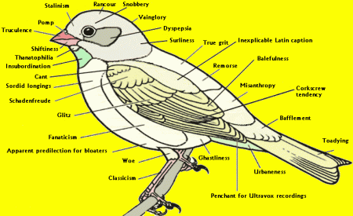

Tuesday, October the 31th, 2017
back to: title, date or indexes
Dear BBC Radio Four
I am a keen and regular listener to Tweet Of The Day, your two-minute programme devoted to birds and birdsong broadcast each weekday morning at the ungodly hour of 5.58. I have grown used to beginning my day having my ears delighted by the various trills, chirps, chirrups, caws, squawks, tweets, etcetera etcetera of our avian pals. Thus I was mightily disconcerted, this morning, to hear not a bird but a bat.
I charged the unpaid interns of the Hooting Yard Ornithological Research Bureau with the task of checking these things for me, and the crippled yet sprightly orphans toiling away in the cellar reported back, toot sweet, that, as I suspected, a bat is not a bird. Unless you have renamed the series Airborne Mammalian Squeak Of The Day, this is simply unfathomable.
Please ensure that your editor studies carefully this diagram of a bird, to avoid committing the same blunder in the future.

Yours peevishly,
Frank Key
Dear Mr Key
Thank you for your peevish complaint. Recent developments at the BBC have clearly escaped your notice. You may know that the inaugural Director General of the Corporation was a God-fearing Scotchman of great rectitude, Lord Reith. Following a conference held in a grim granite chapel perched on a windswept promontory, the senior management vowed to jettison all that leftie politically correct Gramscian Marxist poppycock and return the BBC to stern-jawed Reithian values informed by Christian ethics.
Henceforth Christ is our guide, and the Bible is His Word, and it is abundantly clear from the Bible that the bat is a bird. I refer you to Leviticus 11:13–19.
And these are they which ye shall have in abomination among the fowls; they shall not be eaten, they are an abomination: the eagle, and the ossifrage, and the ospray, And the vulture, and the kite after his kind; Every raven after his kind; And the owl, and the night hawk, and the cuckow, and the hawk after his kind, And the little owl, and the cormorant, and the great owl, And the swan, and the pelican, and the gier eagle, And the stork, the heron after her kind, and the lapwing, and the bat.
I trust this clarifies the matter, and that you will repent of your sins. May the Lord bless you and keep you, or smite you and chastise you, as in His infinite wisdom He sees fit.
Yours in Christ,
The Rev. Ninian Tonguelash
BBC Ornithology & Theology Inquisitor General
Hooting Yard on the Air, December the 7th, 2017 : “Unspeakable” (starts around 13:32)